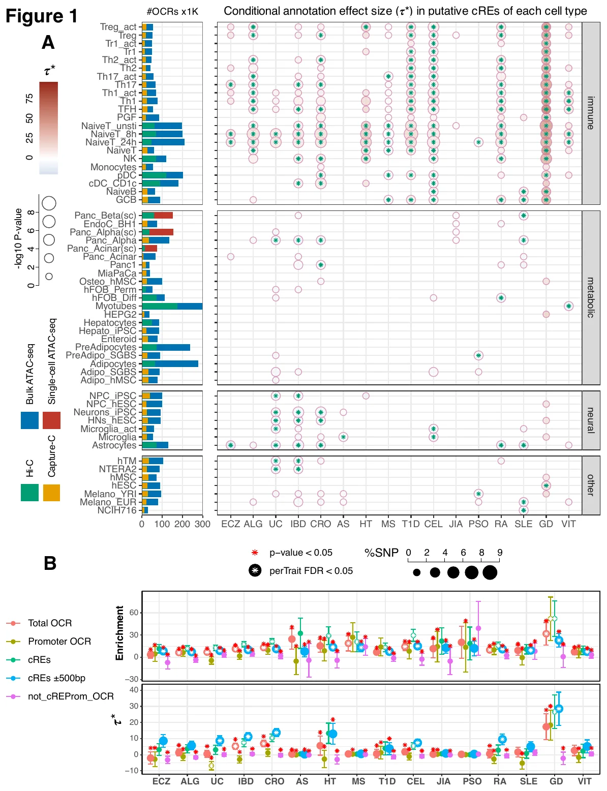
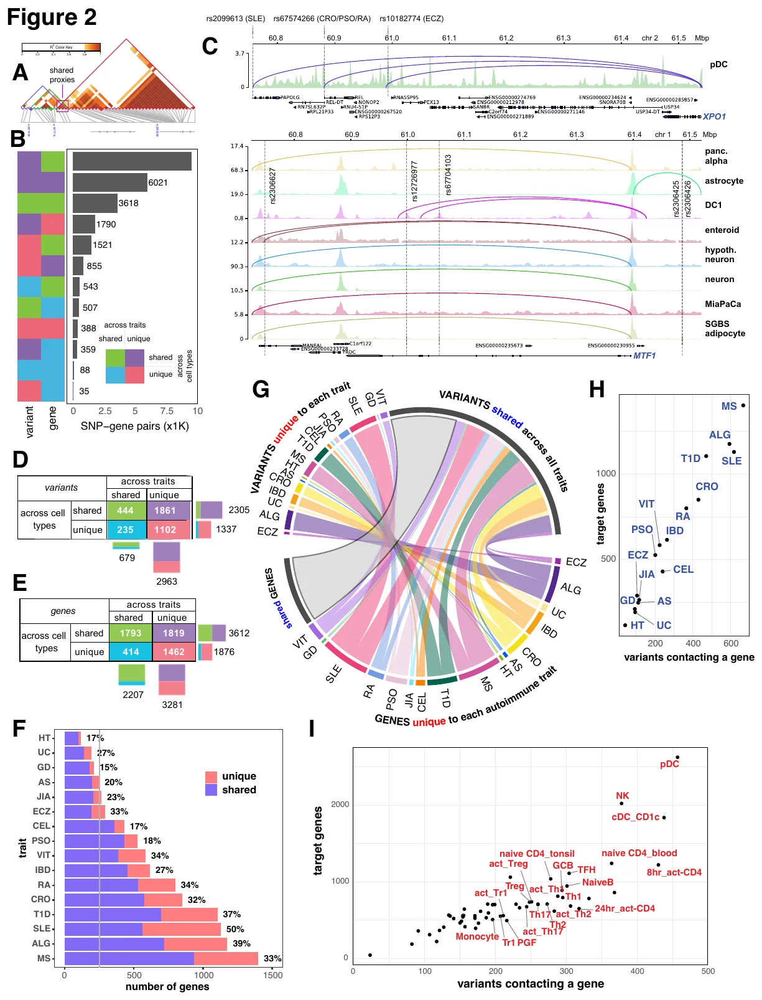
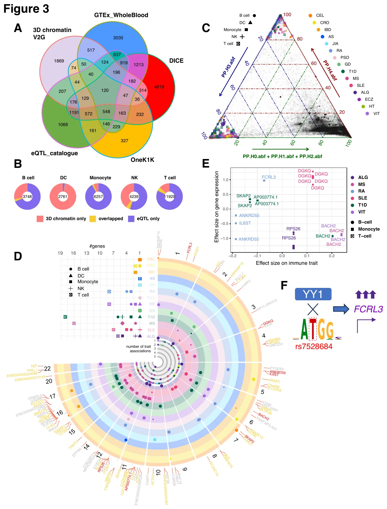
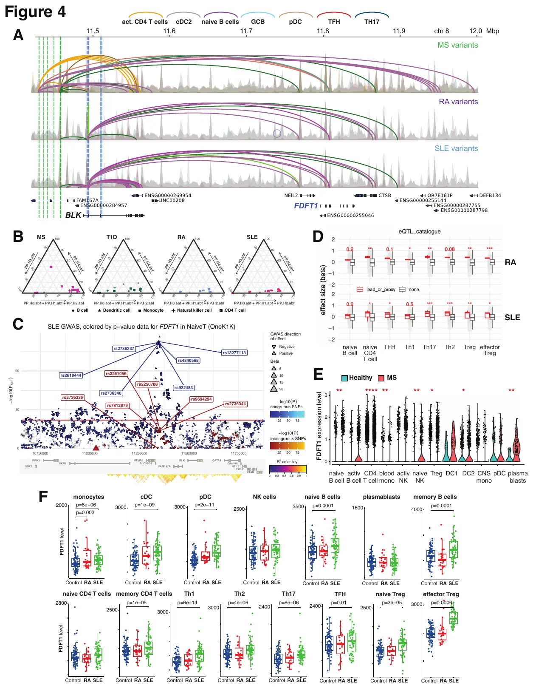
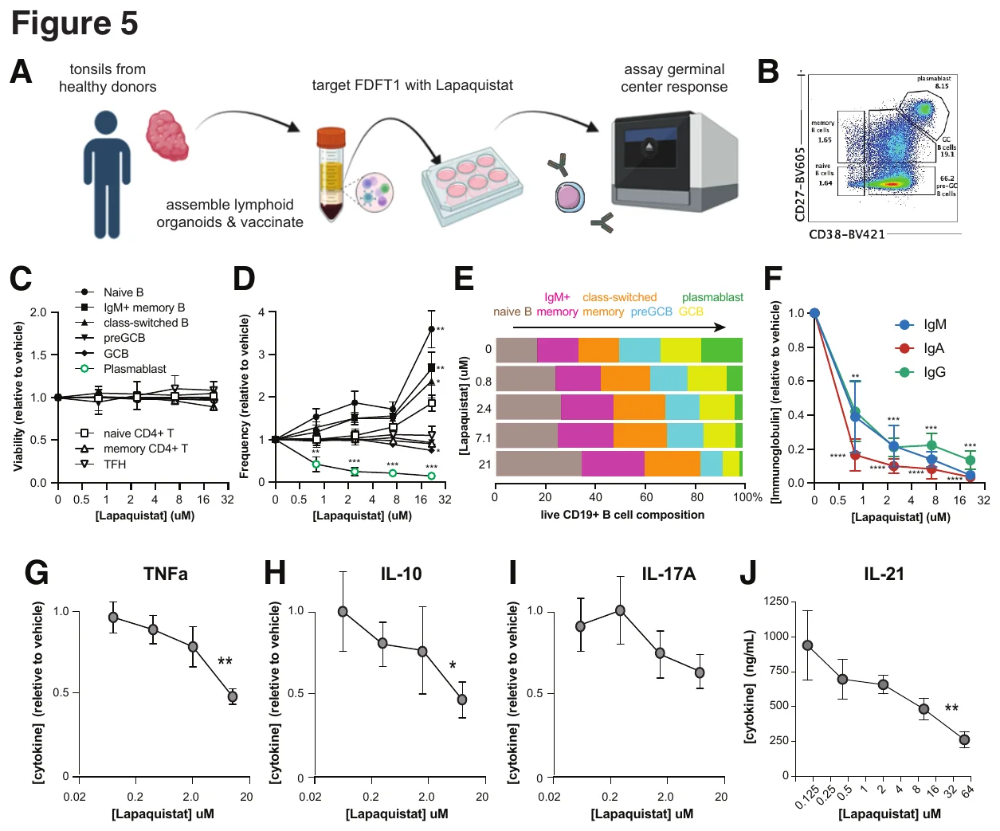

Where 16 autoimmune diseases’ risk concentrates, and one gene worth drugging
Sixteen autoimmune diseases, one question: which cells carry the inherited risk? We built 3D chromatin maps (accessible chromatin plus promoter contacts) in 57 human cell types, nine of them immune types profiled for the first time, and asked where each disease’s heritability concentrates.
Regulatory elements contacted by a gene promoter captured more heritability than one-dimensional annotations. Regulatory T cells showed the strongest enrichment for type 1 diabetes. The maps linked risk variants to 5,488 candidate genes.
One candidate, FDFT1, encodes an enzyme of cholesterol synthesis. Its inhibitor lapaquistat altered T-cell secretion of TNF, IL-17A, IL-10 and IL-21: a pharmacological hypothesis for further preclinical testing.
My contribution: led the heritability partitioning and variant-to-gene integration across 57 cell types and 16 diseases; first-author manuscript.
- 16 autoimmune diseasesGWAS
- 57 cell typesopen chromatin + promoter contacts
- Treg for type 1 diabetesstrongest heritability enrichment
- 5,488 geneslinked to risk variants
- FDFT1 → lapaquistatT-cell cytokines shift
Figures





Trang KB, Sharma P, Cook L, et al. 3D chromatin-based variant-to-gene maps across 57 human cell types reveal the cellular and genetic architecture of autoimmune disease susceptibility. Genome Biol. 2025;26:414. PubMed →